Bu, portföyün JavaScript gerektirmeyen metin sürümüdür. Asıl sayfa tarayıcıda çalışan etkileşimli bir masaüstüdür; aşağıda hem bütün içerik hem de arayüzün ve demoların nasıl göründüğü yazılıdır.
Ekiplerin tekrar eden işlerini üstlenen yapay zekâ ajanları ve otomasyonlar geliştiriyorum.
Buradaki her proje gerçek bir ihtiyaçtan doğdu ve ölçülebilir bir sonuç verdi.
Beni en çok gururlandıran çoğu zaman çıktının kendisi değil, arkasındaki sistem oluyor.
Arayüz ve tasarım
Portföy, tarayıcıda çalışan bir masaüstü işletim sistemi gibi tasarlandı. Kısa bir açılış ekranından sonra açık gri, ince ızgaralı bir masaüstü gelir; vurgu rengi turuncudur, yazılarda Archivo ve JetBrains Mono yazı tipleri kullanılır.
Masaüstünün ortasında üzerinde "Projeler" yazan, halkalı bir gezegen durur. Beş proje simgesi (Karınca, İş Takip, Mevzuat İzleme, Raporlama, SMS Aktarıcı) bu gezegenin çevresindeki yörüngede yavaşça döner. Sağda yedi yıldızdan oluşan bir takımyıldız vardır; yıldızların bir kısmı kişisel dosyaları açar: Araçlar, Tek Sayfa.txt ve İletişim. Gezegene tıklamak BENİOKU dosyasını açar.
Bir simgeye tıklanınca içerik bir pencerede açılır. Pencereler sürüklenir, ekran kenarına yaslanır, küçültülür ve kapatılır; simgeler yörüngeden çekilip bırakılabilir. Masaüstüne sağ tıklamak bir sistem menüsü açar, ⌘K bütün içerikte arama yapar. Sağ üstte Türkçe ve İngilizce arasında geçiş ile bir gece modu düğmesi vardır. Gece modunda masaüstü, Yale Parlak Yıldız Kataloğu ve Hipparcos verileriyle çizilmiş gerçek takımyıldızların olduğu lacivert bir gökyüzüne dönüşür; ortadaki gezegen Güneş, proje simgeleri de onun çevresinde dönen gezegenler olur. Üstte adın hemen yanında LinkedIn bağlantısı durur; alt çubukta açık pencereler yer alır.
Alt çubuğun solundaki, turuncu fırça darbeleriyle girdap gibi boyanmış yuvarlak Başlat düğmesi, eski Windows'u andıran bir Başlat menüsü açar. Menünün solunda, Van Gogh'un Yıldızlı Gece'sini andıran, lacivert üzerine turuncu fırça darbeleriyle boyanmış dar bir şerit vardır; listede Projeler, Belgeler ve Oyunlar alt menüleri, Araçlar, İletişim, gece modu ve dil seçimi bulunur. En altta bir arama kutusu ve Kapat düğmesi vardır. Oyunlar menüsünde sayfa için sıfırdan yazılmış Mayın Tarlası (kapalı kareler, Van Gogh tarzı boyanmış bir tablonun parçalarından oluşan karolardır; açılan kare küçük bir dönüşle sade zemine döner ve açılış tıklanan yerden dışa doğru yayılır; mayınlar küçük kara delikler, bayraklar turuncu yıldızlardır; üç zorluk ve en iyi süre) ve Solitaire (Klondike; kartların önü sade, arkasının tamamı mayın tarlasındaki gibi Van Gogh tarzı boyanmış bir tabloyla kaplı; bir ya da üç kart çekiş, sürükle bırak, geri alma ve kazanınca zıplayan kartlar) açılır. Kapat düğmesine basılınca Projeler gezegeninin yerinde bir kara delik açılır: Parlayan bir birikim diski dönerken pencereler, simgeler ve çubuklar kıvrılarak içine çekilir, ekran kararır, kara delik bir ışık halkasıyla kapanır ve açılış ekranı yeniden gelir.
Proje pencerelerinin çoğunda, projenin nasıl çalıştığını canlı gösteren etkileşimli bir demo vardır. Demolar aşağıda her projenin altında anlatılmıştır.
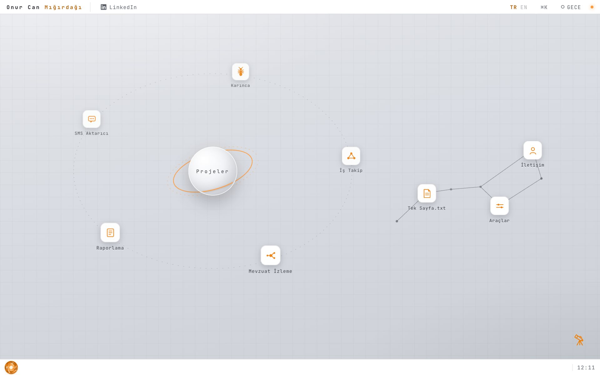
Gündüz masaüstü: açık gri ızgaralı zemin, ortada Projeler yazan turuncu halkalı beyaz gezegen, çevresindeki kesik çizgili yörüngede beş proje simgesi; sağda Tek Sayfa.txt, Araçlar ve İletişim simgelerini birleştiren takımyıldız; üstte ad, TR/EN, ⌘K ve GECE düğmesi, üstte adın yanında LinkedIn, altta yuvarlak Başlat düğmesi.
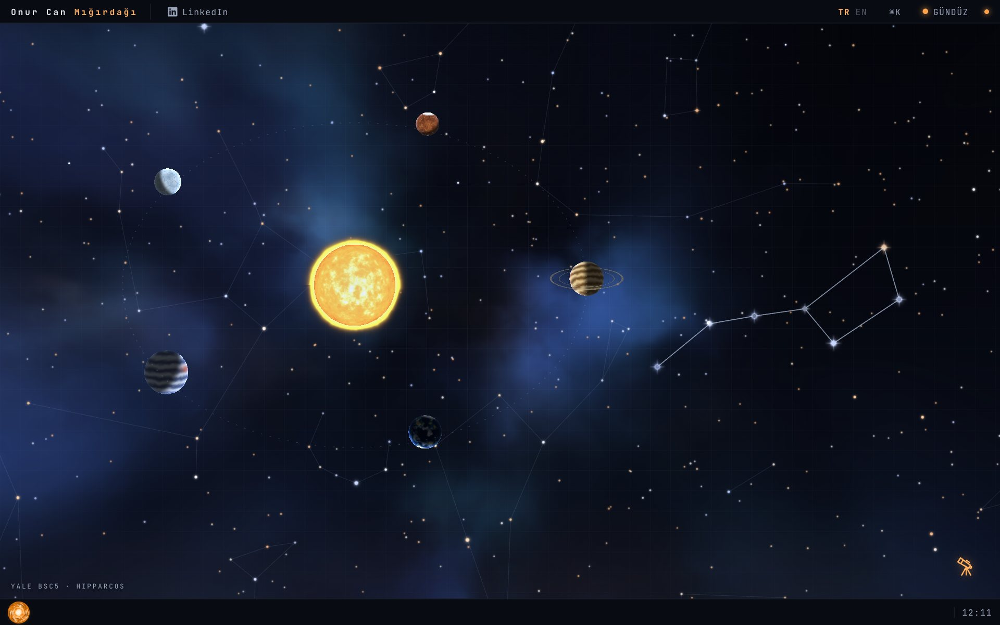
Gece modu: lacivert gökyüzü ve bulutsular, ince çizgilerle bağlanmış gerçek takımyıldızlar, ortada parlayan Güneş ve yörüngesinde gezegenlere dönüşmüş proje simgeleri; sol altta YALE BSC5 · HIPPARCOS yazısı.
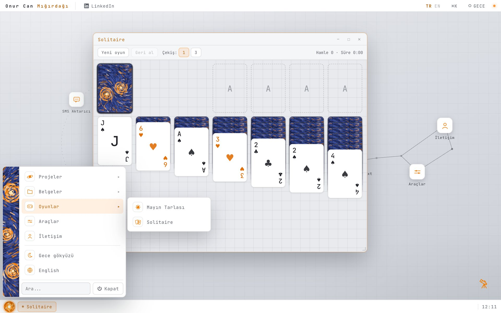
Başlat menüsü: Sol altta açık menü, solunda Yıldızlı Gece'yi andıran boyalı şerit; Projeler, Belgeler ve Oyunlar alt menüleri (Oyunlar açık: Mayın Tarlası ve Solitaire), Araçlar, İletişim, Gece gökyüzü, English; en altta arama kutusu ve Kapat düğmesi. Arkada Solitaire penceresi: masaüstündeki gibi ince ızgaralı açık zemin, sade kartlar, turuncu ve siyah takımlar, kapalı kartların arkası baştan sona boyalı bir tabloyla kaplı.
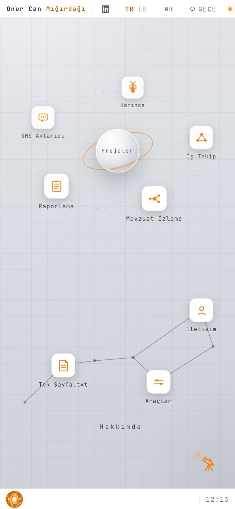
Telefon görünümü: aynı gezegen ve yörünge dikey ekrana sığdırılmış, altında takımyıldız ve Hakkımda yazısı; üstte ad ve dil seçimi, üstte adın yanında LinkedIn, altta yuvarlak Başlat düğmesi.
Projeler
Karınca
2025 ve 2026 · Android, yaklaşık 62.000 satır Kotlin · etkisi ölçüldü, kullanımda
YKS'ye hazırlanan öğrenciler için aralıklı tekrara dayalı bir Android ders çalışma uygulamasıdır. Kartlarda hazır soru yoktur; bir kart her açıldığında soruyu bir generator yeniden kurar. Aşağıdaki pencere, bu soru ekranının ve soruları öğrenciye ulaşmadan önce denetleyen kalite kapısının uygulamanın gerçek kurallarıyla çalışan hâlidir.
Uygulamayı Jetpack Compose üzerinde MVVM ve Clean Architecture ile geliştirdim. Bağımlılık yönetiminde Hilt, yerel veride Room, eşitlemede Supabase kullanılıyor. Tekrar motoru Anki'ye benziyor ama öğrenci kendini puanlamıyor; puanı cevabın doğruluğu ve süresi veriyor. Yanlış cevaplanan kart birkaç dakika içinde yeniden geliyor, doğru cevap ise bir kartı hiçbir zaman sıfırlamıyor.
Sorular hiçbir yerde hazır durmuyor. Her kart yalnızca bir tarifin kimliğini taşıyor: Hangi kavramın, hangi soru kökleriyle ve hangi çeldirici havuzundan sorulacağını tarif eden bir Kotlin sınıfı. Aynı kart her gelişinde başka bir kökle, başka çeldiricilerle ve başka bir şık sırasıyla karşıya çıkıyor; öğrenci cevabı yerinden ezberleyemiyor. Bugün 273 generator dosyası var ve 2.006 kart öğrenciye açıktır. Biyolojide müfredattaki 91 kazanımın 85'i kapsanıyor.
Bu kadar soruyu elle denetlemek mümkün değildi, bu yüzden bir kalite kapısı kurdum. Her kart kayda girmeden önce 120 kez üretiliyor ve her örnek kurallardan geçiyor: Doğru cevap hep en uzun ya da en kısa şık mı, "yalnızca" ya da "hiçbir" gibi sözcüklere bakan öğrenci konuyu bilmeden cevabı bulabiliyor mu, kart yeterince farklı soru çıkarıyor mu? Kurallar biçimi ölçer, anlamı ölçemez. Bu yüzden her dosyayı ayrıca Claude'a, bu iş için yazdığım bir skill ile okutuyorum. İkinci bir doğru cevap, bilgi hatası ya da anlamsız bir çeldirici bulgu olarak açılıyor ve kararı ben veriyorum. Kurallar, bulgular ve kararlar PySide6 ile yazdığım bir masaüstü aracında bir araya geliyor.
Sorular işin kolay kısmıdır. Birinin uygulamayı ertesi gün yeniden açıp açmayacağını, soruların çevresindeki döngü belirliyor: XP, jeton, seviyeler, seriler, tema mağazası ve ücretli üyelik. Bugünkü oturum, geri dönmek için bir sebep bıraktı mı?
60 fps ve WCAG 2.1 AA hedefleyen bir arayüz şartnamesi yazdım. Ardından kod tabanım için kapsamlı bir teknik denetim yaptırdım ve kendi kanaatimle değil, denetimin bulgularıyla ilerledim. Denetim 10 üzerinden 6,8 puan verdi ve test kapsamının zayıf olduğunu açıkça belirtti. Onu faydalı kılan da tam olarak bu dürüstlüktü.
Teknoloji
Kotlin, Jetpack Compose, Material3
MVVM ve Clean Architecture, Hilt
Yerelde Room, Supabase ile eşitleme
273 generator dosyası, 2.006 kart
120 örnekli kalite kapısı, yapay zekâ incelemesi
Kendi isteğimle yaptırdığım denetim, 6,8/10
Sayfadaki etkileşimli demo
İki sekmesi vardır. Ders sekmesinde solda uygulamanın soru ekranı, uygulamanın kendi renkleriyle bir telefonun içinde durur: Çalışma Oturumu başlığı, kalan kart sayısı, soru kartı, beş şık ve Cevabı Göster düğmesi. Sorular sayfada, uygulamadaki bio_9121_b generator'ının içeriği ve kurallarıyla üretilir; kartta hazır bir soru yoktur, yalnızca bir tarifin kimliği vardır. Sağda kartın kimliği, sorunun hangi yönden kurulduğu (mineralden göreve, görevden minerale, ayrıntı, hangisi değildir) ve aynı karttan yeni bir soru üreten bir düğme bulunur. Cevap verilince doğru şık yeşile, yanlış seçilen kırmızıya döner ve çözüm açılır; aralıklı tekrar kutusu cevabı, süreyi, Tekrar, İyi ya da Kolay değerlendirmesini ve kartın ne zaman yeniden geleceğini gösterir. Puanı öğrenci değil, cevap ve süre verir. Ekonomi kutusu XP, seviye ve jetonu gösterir. Ziyaretçi soruları kendisi çözebilir; dokunmazsa demo kendi kendine oynar. Kalite kapısı sekmesinde aynı kart 120 kez üretilir ve her örnek uygulamanın kalite kurallarından geçer: doğru cevabın belirgin biçimde en uzun ya da en kısa şık olup olmadığı, mutlak sözcüklere bakarak tahmin edilip edilemediği, kaç farklı soru çıktığı ve yapı. Bozuk bir tarif (kısa ya da mutlak sözcüklü çeldiriciler) seçilince kapı kapanır. Ardından yapay zekâ incelemesi, editör kararı ve kayıt adımları anlatılır. XP, jeton ve seviye değerleri temsilîdir.
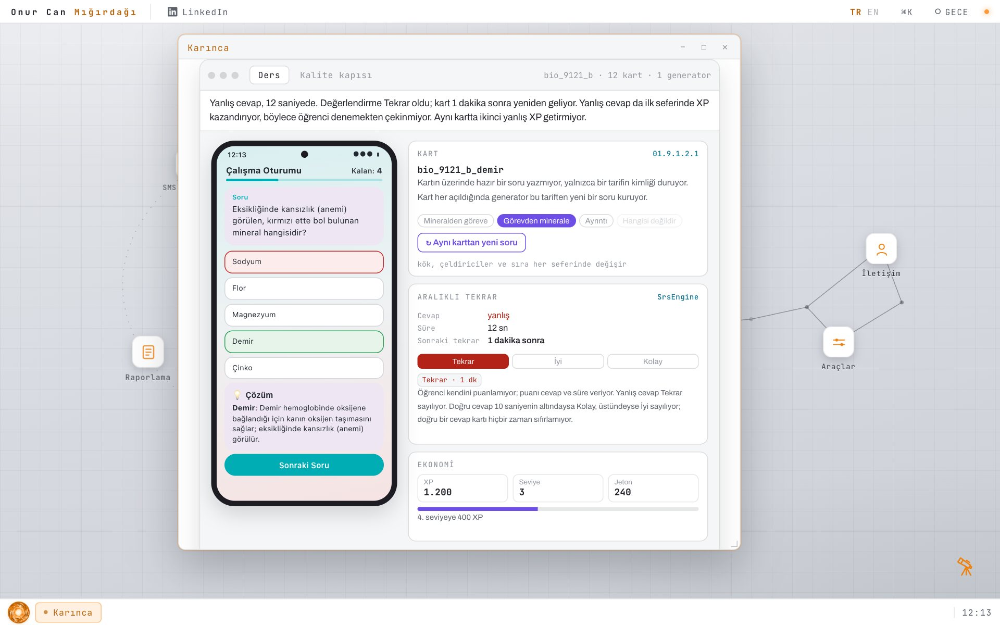
Karınca, Ders sekmesi: Telefonda uygulamanın soru ekranı; demir kartında görevden minerale kurulmuş bir soru yanlış cevaplanmış, seçilen şık kırmızı, doğru şık yeşil, altında çözüm. Sağda kartın kimliği bio_9121_b_demir, soru yönü, aralıklı tekrarda Tekrar değerlendirmesi ve 1 dakika sonra yeniden gelme, altta XP, seviye ve jeton.
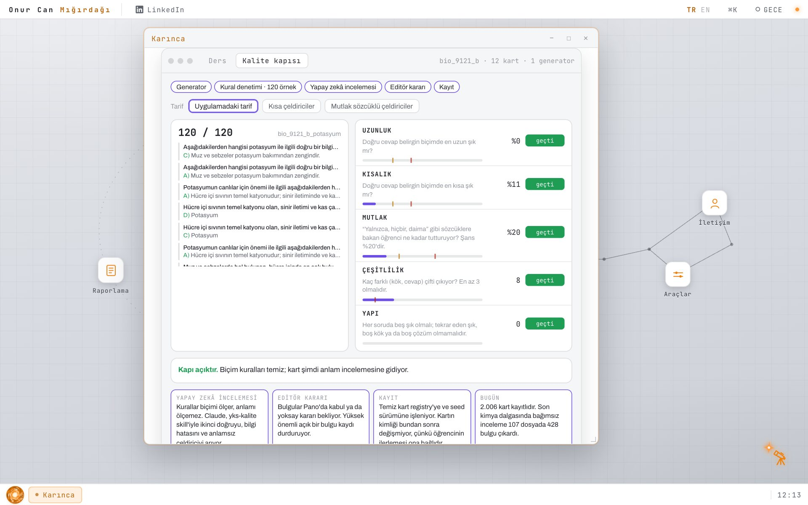
Karınca, Kalite kapısı sekmesi: Potasyum kartı 120 kez üretilmiş; UZUNLUK, KISALIK, MUTLAK, ÇEŞİTLİLİK ve YAPI kurallarının ölçümleri ve eşikleri, hepsi geçti; üstte generatordan kayda uzanan adımlar.
Etiketler: Kotlin, Jetpack Compose, Supabase, Soru üretimi, Kalite kontrol
İş Takip Modülü
2026 · kişisel proje · BTS & Partners · kullanımda
Dijital bir Zettelkasten: Çalışırken yaptığım her işi ve öğrendiğim her bilgiyi tek bir veritabanında topluyor, sonra bu bilgiye bağlantıları üzerinden geri dönüyorum. Aşağıdaki pencere, uygulamanın graf ekranının gerçek veriyle çalışan hâlidir.
Zettelkasten, sosyolog Niklas Luhmann'ın kullandığı not kutusu yöntemidir. Her fikir, tek başına anlam taşıyan küçük bir nota yazılır; her notun kalıcı bir kimliği vardır ve notlar klasörlerle değil, birbirlerine yaptıkları atıflarla düzenlenir. Zamanla bilgi büyüyen bir ağa dönüşür ve aranan şey bir kategoride değil, bir bağlantının ucunda bulunur. İş Takip Modülü, bu yöntemin bir veritabanına taşınmış hâlidir.
Çalıştıkça iki şey birlikte birikiyor: iş takibim ve öğrendiklerim. Bir görev açıldığında, üzerinde çalışırken ortaya çıkan bulgular, karşılaştığım kavramlar ve okuduğum kaynaklar ayrı notlar olarak ekleniyor ve göreve bağlanıyor. Görev kapandığında bilgi onunla birlikte kaybolmuyor; sonraki iş aynı kavrama dokunduğunda önceki bulgular zaten orada oluyor. Her not, tek bir tabloda bir düğüm olarak duruyor ve aralarındaki her ilişkinin bir türü var: Bir araç bir protokolü uygular, bir ürün bir düzenlemeye tabidir, bir bulgu bir kaynağa dayanır.
Bilgi iki yoldan giriyor. Birincisi hızlı ekleme: "yarın 14:00 sözleşme incelemesi #kvkk @proje +kişi P1" gibi tek satırlık düz bir cümle yazıyorum; uygulama etiketi, projeyi, kişiyi, tarihi ve önceliği ayırıp notu ve bağlantılarını kendisi oluşturuyor. İkincisi, Claude ile yürüttüğüm işlerin kapanışı: Bir görev bittiğinde Claude kapanış notunu, yeni bulguları, kavramları, kaynakları ve bunlar arasındaki bağlantıları şemaya uygun bir YAML olarak öneriyor; onaylarsam kaydediliyor. Her kaynağın nereden geldiği (web, kitap, makale, sohbet, meslektaş) ve kimin ürettiği, benim mi yapay zekânın mı olduğu da kayıt altındadır.
Bu bilgiye dört yoldan geri dönüyorum. Grafta bir kavrama tıklayıp iki adımlık çevresini görüyorum: O konuda hangi işleri yaptığımı, neler bulduğumu, hangi kaynaklara dayandığımı. Aramada "kvkk #research status:shipped" gibi bir sorguyla türe, duruma, etikete ve projeye göre süzüyorum. Yeni bir işe başladığımda Claude, uygulamanın hazırladığı prompt ile aynı veritabanını okuyor ve önceki notları bağlam olarak kullanıyor; Prompt sekmesinde yer alan metin de birebir budur. Oyun sekmesi ise bağlantıları hafızamda canlı tutuyor: Aralıklı tekrar kartlara değil bağlantılara uygulanıyor ve her bağlantının kendi hafıza eğrisi var.
Bir Zettelkasten ancak bağlantıları kadar değerlidir. Bu yüzden bir notun hangi türle, bir bağlantının hangi ilişkiyle kurulacağı yazılı kurallara bağlı: Etiket bir konuyu değil, yalnızca bir durumu işaretler; bir mevzuat etiket olarak değil, kavram olarak açılır. Yanlış kurulmuş 88 bağlantıyı 15 aşamada, her aşamanın öncesinde ve sonrasında yedek alarak düzelttim; anlamı belirsiz tek bir relates_to bağlantısı kalmadı.
Her şey tek bir nodes tablosunda durur, tür bilgisi ise kind sütunundadır. Her tür için ayrı tablo açmak, her graf sorgusunda bir JOIN demekti; tek tabloyla graf sorguları türden bağımsız çalışıyor. Bağlantılar ayrı bir tabloda tutuluyor: Aynı üçlü iki kez girilemiyor, bir not kendisine bağlanamıyor. Yorumlar, tekrarlanan test çalıştırmaları ve ağırlıklı ölçütler nota bağlı ayrı tablolarda tutulur; oyunun hafızası ise bağlantıya bağlıdır. Her satır RLS ile sahibine kilitli ve her yazma işlemi audit_log'a kaydediliyor.
Kişi, görev, bulgu ve proje adları burada numaralandırıldı, çünkü müşteri ve şirket içi işlere aittir. Türleri, durumları ve bütün bağlantıları ise gerçektir.
Yapı taşları
Flutter, yaklaşık 14.400 satır Dart
Satır düzeyinde erişim kilitli veritabanı
177 not, türü belirli 415 bağlantı
Sıfırdan yazılmış kuvvet yönelimli graf
Prompt üretimi, onaylı yapay zekâ kaydı
Her bağlantıda FSRS hafızası
Sayfadaki etkileşimli demo
Pencerede uygulamanın graf ekranı gerçek veriyle çalışır: Notlar ve aralarındaki türü belirli bağlantılar, türlerine göre renklendirilmiş bir ağ olarak çizilir. Bir düğüme tıklanınca iki adımlık çevresi öne çıkar; düğümler sürüklenir, tekerlekle yakınlaşılır. Prompt sekmesi uygulamanın Claude'a verdiği metnin aynısını gösterir. Oyun sekmesi bir kavramın hangi düğüme ve hangi ilişkiyle bağlı olduğunu sorar; aralıklı tekrar kartlara değil bağlantılara uygulanır. Kişi, görev, bulgu ve proje adları numaralandırılmıştır.
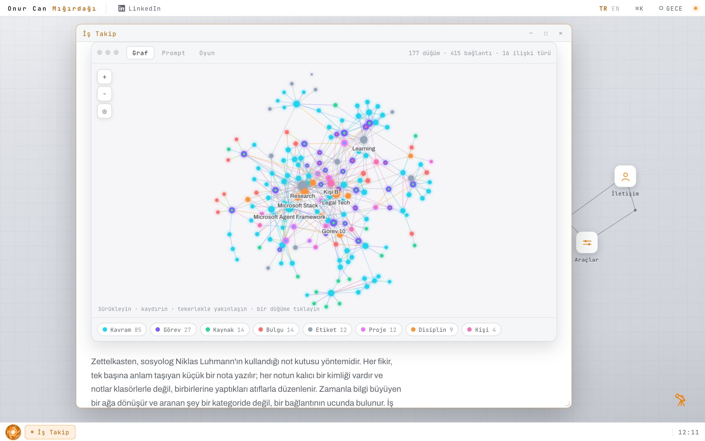
İş Takip penceresi: Graf sekmesinde 177 düğüm, 415 bağlantı ve 16 ilişki türüyle, türlerine göre renklendirilmiş bir bilgi ağı; Learning, Research, Legal Tech, Microsoft Agent Framework gibi düğüm adları; altta Kavram 85, Görev 27, Kaynak 14 gibi tür sayaçları.
Etiketler: Zettelkasten, Flutter, Bilgi grafı, Yapay zekâ ajanı
Mevzuat İzleme Sistemi
2026 · BTS & Partners · yayında, etkisi ölçüldü, kullanımda
Beş teknoloji şirketini ve resmî kurum, düzenleyici ve sektör basınından 107 kaynağı izleyen; canlı ortamda insan müdahalesi olmadan çalışan bir yapay zekâ ajanı hattıdır.
Toplayıcı ajan kaynakları saatte bir tarıyor. Her içeriği tam metninden özetliyor, alaka puanı veriyor; ilgili şirketi, ekosistemi ve çalışma alanını etiketleyip 17 alanlı bir kayıt olarak ortak veritabanına yazıyor. Hat tam bu kayıtta ikiye ayrılıyor: Yayıncı ajanlardan biri iki saatte bir izlenen beş şirketin (Microsoft, Apple, Google, LinkedIn, Snapchat) haberlerini ve ekosistemdeki gelişmeleri süzerek teknoloji bültenini, diğeri Türkiye'deki düzenleyici gelişmeleri süzerek mevzuat bültenini kurumsal e-postayla gönderiyor. Günlük işleyişte kimsenin müdahalesine gerek kalmıyor.
Yukarıdaki turda gösterilen kayıtlar temsilîdir ve akışı anlatmak için hazırlandı; izlenen beş şirket, etiketler ve süzgeçler ise sistemdekiyle aynıdır.
İki yaklaşımı sağlıklı biçimde karşılaştırabilmek için aynı iş akışını Microsoft Power Automate üzerinde de kurdum. Bu kadar çok kaynağı sorgulayıp sonuçları yapay zekâyla analiz etmek, şirketin lisans kapsamının dışında kalıyordu. Ajan sürümünün tercih edilmesinin nedeni de buydu: Mevcut abonelik kapasitesiyle, ek altyapı maliyeti olmadan çalışıyor.
Bunun yanında, şirkette yapay zekâ çıktılarını değerlendirmek için kullanılan yöntemi tasarladım: yapay zekâ destekli sözleşme incelemesi için ağırlıklı bir doğruluk testi ve Türkçeden İngilizceye çeviri kalitesi karşılaştırması.
Yapı taşları
Python ile zamanlanmış ajanlar
Merkezî depo olarak Supabase
İnceleme ekranı için Streamlit
Dağıtım için Microsoft Graph
Power Automate ile karşılaştırma
Şirket, ekosistem ve çalışma alanı etiketleme
Sayfadaki etkileşimli demo
Pencerenin üstünde, projenin sunumundaki akış şemasından uyarlanmış bir çizim vardır: kaynaklar, toplayıcı ajan, ortak veritabanı ve iki yayıncı ajan. Tur sekmesi hattı baştan sona oynatır: Toplayıcı ajan kaynak sayfaları gezer, içeriği okur, kurum üslubunda özetler, şirket, ekosistem ve çalışma alanı etiketlerini seçer, 0,40 eşiğiyle alaka puanı verir ve kaydı ortak veritabanına yazar. Veritabanı panelinde kayıtlar süzülüp açılabilir. Ardından hat ikiye ayrılır: Teknoloji bülteni yayıncısı izlenen beş şirketin haberlerini, mevzuat bülteni yayıncısı düzenleyici gelişmeleri süzer ve iki bülten e-postayla ekibe gider. Tur duraklatılabilir, hızlandırılabilir ve bölümler arasında atlanabilir. Bülten sekmesi iki bültenin örneğini, Üslup sekmesi yazım kılavuzunu, Kurallar sekmesi ajanın uyduğu kuralları gösterir. Kayıtlar temsilîdir.
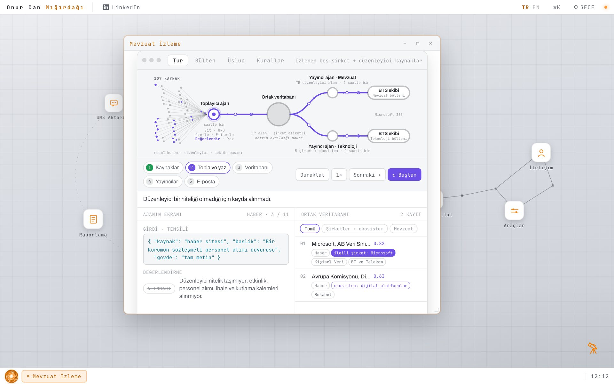
Mevzuat İzleme penceresi: Üstte 107 kaynaktan toplayıcı ajana, ortak veritabanına ve iki yayıncı ajana giden mor akış şeması; altta bölüm düğmeleri (Kaynaklar, Topla ve yaz, Veritabanı, Yayıncılar, E-posta), solda ajanın değerlendirdiği bir haber ve ALINMADI kararı, sağda şirket ve ekosistem etiketli kayıtların durduğu ortak veritabanı.
Etiketler: Python, Yapay zekâ ajanları, Supabase, Microsoft Graph
Pazaryeri Raporlama
2025 · Tradist Distribution · yayında, etkisi ölçüldü, kullanımda
Dört pazaryeri API'sinden, dört farklı yapıda gelen veri, şirketin gerçekten okuduğu tek bir rapora dönüşür.
Satış verileri dört ayrı pazaryeri panelinde duruyordu: Amazon, n11, Trendyol ve Hepsiburada. Her ay biri bu panelleri tek tek açıyor, her birinden veriyi kendi biçiminde dışa aktarıyor ve parçaları elle birleştiriyordu. Biçimler birbirini tutmuyordu: Alan adları, tarih biçimleri ve neyin iade sayılacağına dair kurallar farklıydı.
Her kanalın verisini kendi API'si üzerinden çektim, yanıtları tek bir şemada birleştirdim ve pazaryerlerinin dışa aktardığı düzende değil, şirketin okumaya alıştığı düzende hazırlanmış tek bir aylık rapor oluşturdum. Bu, ayda beş saati aşan elle veri toplama işini ortadan kaldırdı; daha da önemlisi, beraberinde gelen kopyala yapıştır hatalarını da bitirdi.
Ne yapıyor
Dört pazaryeri API'sinden zamanlanmış veri çekme
Alanların tek şemada eşlenmesi
Para birimi, tarih ve iade verilerinin standartlaştırılması
Pazaryerinin değil, şirketin kullandığı düzen
Tek aylık rapor, ayda 5 saatten fazla kazanç
Sayfadaki etkileşimli demo
Üstte dört pazaryeri API'sinin kendi biçimindeki örnek yanıtları, altta Mac tarzı bir bilgisayar ekranı vardır. Program önce ne tür bir rapor istendiğini sorar: aylık ya da yıllık rapor, dönem ve dahil edilecek pazaryerleri. Ziyaretçi seçenekleri değiştirebilir. Rapor, ziyaretçi Raporu oluştur düğmesine bastığında başlar; düğme yanıp söner ve yanında "Raporu başlatmak için tıklayın" yazar. Düğmeye basılınca pencere geri plana çekilir ve sağ üstte bir bildirim baloncuğu ilerlemeyi gösterir: Veriler alınır, alanlar tek yapıda birleştirilir, tarih, para birimi ve iadeler düzenlenir, rapor yazılır. Sonra şirketin düzeninde bir satış raporu açılır: net satış, sipariş sayısı ve iade oranı, kanal bazında grafik ve tablo. Rapor kanala göre süzülebilir. Rakamlar temsilîdir.
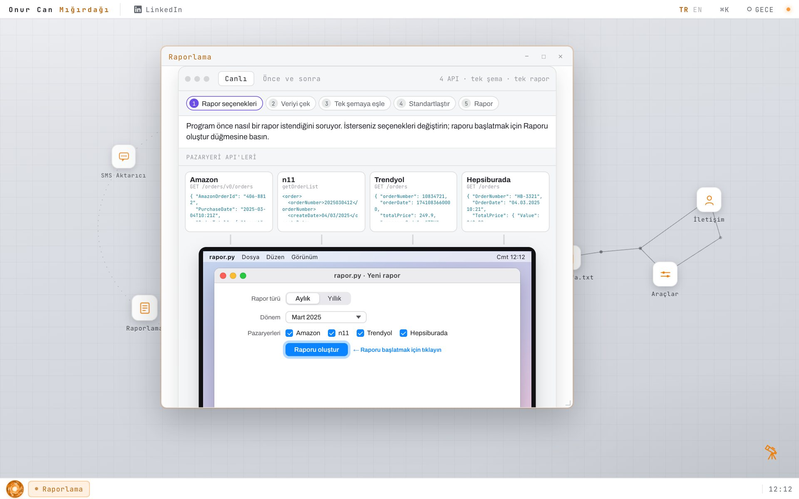
Raporlama, ilk adım: Mac tarzı ekranda rapor.py · Yeni rapor penceresi; Aylık ve Yıllık seçimi, Mart 2025 dönemi, dört pazaryeri onay kutusu ve mavi Raporu oluştur düğmesi; üstte dört pazaryeri API'sinin kendi biçimindeki ham yanıtları.
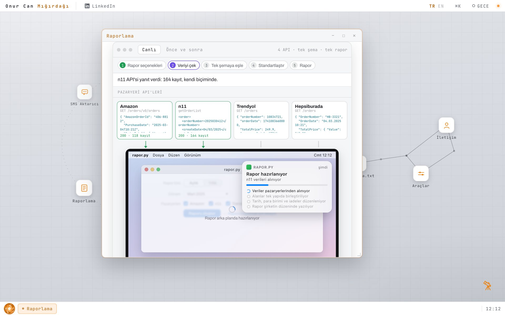
Raporlama, hazırlık: Pencere geri plana çekilmiş ve Rapor arka planda hazırlanıyor yazıyor; sağ üstte Rapor hazırlanıyor bildirim baloncuğu, ilerleme çubuğu ve dört adımlık liste; üstte veri gelen API kartları yeşile dönmüş.
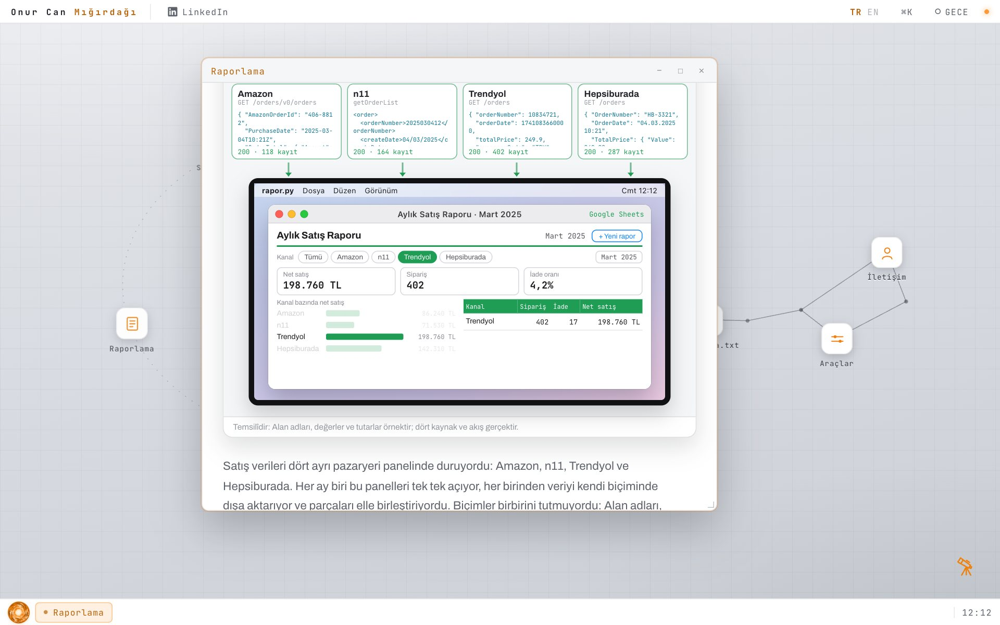
Raporlama, sonuç: Aylık Satış Raporu · Mart 2025; kanal filtresinde Trendyol seçili, net satış 198.760 TL, 402 sipariş ve yüzde 4,2 iade oranı, kanal bazında çubuk grafik ve tablo, sağ üstte + Yeni rapor düğmesi.
Etiketler: Python, Apps Script, API entegrasyonu
SMS Doğrulama Kodu Aktarıcısı
2025 · Tradist Distribution · yayında, etkisi ölçüldü, kullanımda
Pazaryeri doğrulama kodları SMS'ten otomatik olarak alınıyor; ekip, kimseye sormadan kodu tek bir tablodan okuyor.
Amazon, n11, Trendyol ve Hepsiburada, satıcı paneline her girişte SMS ile doğrulama kodu gönderiyor. Bazı pazaryerleri bir hesaba yalnızca sınırlı sayıda telefon eklenmesine izin verdiği için kodlar farklı çalışanların kendi telefonlarına gidiyordu ve hangi pazaryerinin hangi telefona kayıtlı olduğu kolayca karışıyordu. Kod geldiği anda o kişiye ulaşılamazsa giriş bekliyordu; gece çalışmak gerektiğinde ise telefon sahibine ulaşmak gerekiyordu. Bu ne sürdürülebilir ne de profesyonel bir yöntemdi.
Bir Android uygulaması yazdım ve kodların gittiği her telefona kurdum. Uygulama yalnızca pazaryerlerinden gelen doğrulama mesajlarını alıyor, kişisel mesajlara dokunmuyor ve kodu geldiği anda ortak bir Google Sheets tablosuna gönderiyor. Uygulama arka planda çalışıyor ve cihaz yeniden başlasa da çalışmayı sürdürüyor. Koda ihtiyacı olan tabloyu açıp alıyor, kimse kimseye kod sormuyor; kod artık tek bir kişinin elindeki bir şey olmaktan çıktı.
Kişi başına günde yaklaşık yirmi dakika kazandırdı. İhtiyacı kendim fark ettim ve kendi inisiyatifimle geliştirdim. Ben ayrıldıktan sonra da kullanılmaya devam ediyordu.
Nasıl çalışıyor
Dört pazaryerinden gelen kodlar
Her telefona kurulu Aktarıcı uygulaması
Yalnızca pazaryeri SMS'leri, kişisel mesajlar değil
Ortak Google Sheets tablosuna aktarılıyor
Arka planda çalışıyor, yeniden başlatmadan etkilenmiyor
Kimse kimseye kod sormuyor
Sayfadaki etkileşimli demo
Üç çalışanın telefonu yan yana durur ve her birinde Aktarıcı uygulaması kuruludur; telefonların altında hangi pazaryerlerinin o telefona kayıtlı olduğu yazar. Akış kendiliğinden oynar: Önce Çalışan A'ya bankadan kod içeren bir mesaj gelir ve Aktarıcı onu tabloya göndermez, çünkü gönderen bir pazaryeri değildir. Ardından Hepsiburada kodu toplantıdaki Çalışan B'ye ve izindeki Çalışan C'ye, n11 kodu C'ye, Trendyol kodu A'ya gelir. Her kod mesajın içinden ayıklanır, ortak Google Sheets tablosuna yazılır ve giriş yapan kişi kodu tablodan alır. Önce ve sonra sekmesi eski yöntemle yenisini karşılaştırır. Kodlar ve mesajlar temsilîdir.
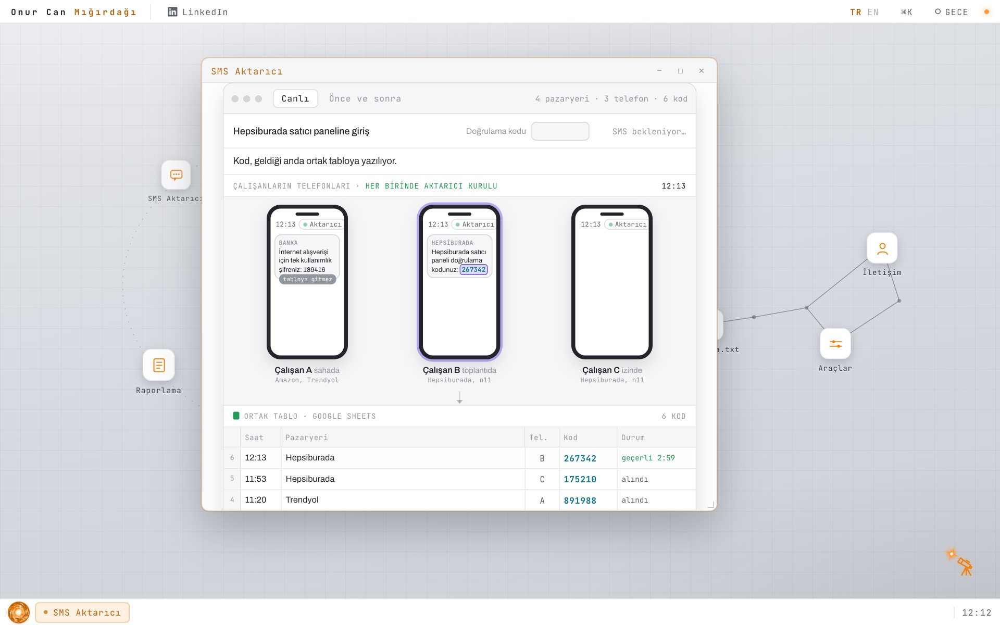
SMS Aktarıcı penceresi: Üstte Hepsiburada satıcı paneline giriş satırı; ortada her birinde Aktarıcı kurulu üç telefon, A'da tabloya gitmez etiketli banka mesajı, B'de işaretlenmiş Hepsiburada kodu; altta saat, pazaryeri, telefon, kod ve durum sütunlarıyla ortak Google Sheets tablosu.
Etiketler: Android, Kotlin, Google Sheets
Araçlar
Fiilen kullandığım araçlar
Yapay zekâ: Prompt mühendisliği, ajan hatları, LLM değerlendirme ve kıyaslama testleri, çıktı kalite kontrolü, araç karşılaştırması
Otomasyon: Python, n8n, Power Automate, Google Apps Script, Microsoft Graph, zamanlanmış ajanlar
Veri ve entegrasyon: API entegrasyonu, Supabase, SQL, Google Sheets API, Streamlit
Uygulama geliştirme: Kotlin, Jetpack Compose, Android arka plan servisleri, PyQt
This is the text edition of the portfolio, readable without JavaScript. The real page is an interactive desktop that runs in the browser; below is all of its content, plus a description of how the interface and the demos look.
Onur Can Mığırdağı
AI & Automation · Istanbul, Türkiye
I build AI agents and automation that take repetitive work off a team's hands.
Every project here started from a real problem and ended with something measurable.
The pipeline behind the output is usually the part I am prouder of.
Interface and design
The portfolio is designed as a desktop operating system that runs in the browser. After a short boot screen comes a light grey desktop with a fine grid; the accent colour is orange, and the type is set in Archivo and JetBrains Mono.
In the middle of the desktop sits a ringed planet labelled "Projects". Five project icons (Karınca, İş Takip, Mevzuat İzleme, Reporting, SMS Relay) circle it slowly in orbit. On the right is a constellation of seven stars; some of the stars open personal files: Tools, One Page.txt and Contact. Clicking the planet opens the README.
Clicking an icon opens its content in a window. Windows can be dragged, snapped to the screen edge, minimised and closed; icons can be pulled out of orbit and let go. Right clicking the desktop opens a system menu, and ⌘K searches everything. At the top right there is a Turkish and English switch and a night mode button. In night mode the desktop becomes a deep blue sky with real constellations drawn from the Yale Bright Star Catalogue and Hipparcos data; the planet in the middle becomes the Sun and the project icons become planets circling it. Right next to the name at the top are a LinkedIn link; the bottom bar holds the open windows.
The round start button at the left of the bottom bar, painted as a small orange whirl of brush strokes, opens a start menu in the spirit of old Windows. Down its left side runs a narrow band painted in orange brush strokes on night blue, after Van Gogh's The Starry Night; the list has Projects, Documents and Games submenus, Tools, Contact, night mode and language, with a search box and a Shut down button at the bottom. The Games menu opens Minesweeper (the closed squares are tiles cut from one painting in Van Gogh's manner; an opened square turns into a plain one with a small spin, and the opening spreads outward from the click; the mines are little black holes and the flags orange stars; three levels and a best time) and Solitaire (Klondike; plain card faces, and the whole back of each card is covered by a painting in Van Gogh's manner like the minesweeper board; turn one or three, drag and drop, undo, and bouncing cards when you win), both written from scratch for the page. On Shut down a black hole opens where the Projects planet is: a glowing accretion disk spins while the windows, icons and bars curl into it, the screen goes dark, the hole closes with a ring of light, and the boot screen comes back.
Most project windows include an interactive demo that shows the project working. The demos are described below, under each project.
The desktop by day: light grey grid, a white planet with an orange ring labelled Projeler in the middle, five project icons on the dotted orbit around it; on the right a constellation joining One Page, Tools and Contact; name, TR/EN, ⌘K and the night button at the top, LinkedIn next to the name, the round start button at the bottom.Night mode: a deep blue sky with nebulae, real constellations joined by thin lines, a glowing Sun in the middle and the project icons turned into planets on its orbit; YALE BSC5 · HIPPARCOS in the lower left.The start menu: open at the lower left, a band painted after The Starry Night down its left side; Projects, Documents and Games submenus (Games open: Minesweeper and Solitaire), Tools, Contact, Night sky, Türkçe; a search box and a Shut down button at the bottom. Behind it the Solitaire window: a light fine grid like the desktop, plain card faces, orange and black suits, and card backs fully covered by a painting.On a phone: the same planet and orbit fitted to a tall screen, the constellation and an About label below it; name and language switch at the top, LinkedIn next to the name, the round start button at the bottom.
Projects
Karınca
2025 to 2026 · Android, ~62,000 lines of Kotlin · measured, running
A spaced repetition study app for students preparing for YKS, the Turkish university entrance exam. No card holds a written question; every time a card comes up, a generator builds its question anew. The window below is the study screen, and the quality gate that checks the questions before they reach a student, running on the app's real rules.
Built on Jetpack Compose with MVVM and Clean Architecture, Hilt for injection, Room locally and Supabase for sync. The repetition engine is Anki like, but students do not grade themselves: the rating comes from whether the answer was right and how long it took. A card answered wrong comes back within minutes, and a right answer never resets a card.
The questions are not stored anywhere. Each card carries only the id of a recipe: a Kotlin class describing which concept to ask, with which question stems and from which pool of distractors. Every time the same card comes back it has a different stem, different distractors and a different order, so the answer cannot be memorised by its position. There are 273 generator files today and 2,006 cards open to students; in biology 85 of the curriculum's 91 learning outcomes are covered.
Checking that many questions by hand was not possible, so I built a quality gate. Before a card is registered it is generated 120 times and every sample goes through the rules: is the right answer always the longest or the shortest option, can a student who looks for words like "only" or "never" find it without knowing the topic, does the card produce enough different questions. Rules measure form, not meaning, so every file is also read by Claude with a skill I wrote for the job. A second right answer, a factual error or a meaningless distractor opens a finding, and I make the decision. Rules, findings and decisions come together in a desktop tool I wrote with PySide6.
The questions are the easy part. What decides whether someone opens the app again tomorrow is the loop around them: XP, coins, levels, streaks, a theme shop and a paywall. Did today's session leave a reason to come back?
I wrote a UI specification targeting 60fps and WCAG 2.1 AA, then commissioned a full technical audit of my own codebase and worked from its findings rather than from my own opinion of the code. It scored 6.8 out of 10 and was blunt about weak test coverage, which is exactly what made it useful.
Stack
Kotlin, Jetpack Compose, Material3
MVVM and Clean Architecture, Hilt
Room local, Supabase sync
273 generator files, 2,006 cards
120 sample quality gate, AI review
Self commissioned audit, 6.8/10
The interactive demo on the page
It has two tabs. On the Study tab the app's question screen sits inside a phone, in the app's own colours: the Çalışma Oturumu (study session) header, the cards left, the question card, five options and the Cevabı Göster (show answer) button. The questions are built on the page from the content and rules of the app's bio_9121_b generator; the card holds no written question, only the id of a recipe. On the right are the card id, the direction the question was built from (mineral to role, role to mineral, detail, which is not) and a button that builds a new question from the same card. After an answer the right option turns green, a wrong pick red, and the explanation opens; the spaced repetition box shows the answer, the time, the rating (Again, Good or Easy) and when the card comes back. The rating comes from the answer and the time, not from the student. The economy box shows XP, level and coins. Visitors can answer the questions themselves; left alone, the demo plays by itself. On the Quality gate tab the same card is generated 120 times and every sample goes through the app's quality rules: whether the right answer is noticeably the longest or the shortest option, whether it can be guessed from absolute words, how many distinct questions come out, and structure. Choosing a broken recipe (short distractors, or distractors with absolute words) closes the gate. Then the AI review, the editor's decision and the registration steps are described. XP, coin and level values are illustrative.
Karınca, the Study tab: the app's question screen in a phone; a role to mineral question on the iron card answered wrong, the pick in red, the right option in green, the explanation below. On the right the card id bio_9121_b_demir, the question direction, the Again rating with the card coming back in a minute, and XP, level and coins.Karınca, the Quality gate tab: the potassium card generated 120 times; the measurements and thresholds for the length, shortness, absolute word, diversity and structure rules, all passing; above, the steps from generator to registration.
Tags: Kotlin, Jetpack Compose, Supabase, Question generation, Quality control
İş Takip Modülü
2026 · personal project · BTS & Partners · running
A digital Zettelkasten: for as long as I work, every task I do and everything I learn is kept in one database, and I get back to it later through its connections. The window below is the graph screen of the app running on the real data.
A Zettelkasten is the slip box method the sociologist Niklas Luhmann worked with. Every idea goes on its own small note that makes sense by itself, every note has a permanent identity, and the notes are organised not in folders but by the references they make to each other. Over time the knowledge turns into a network that grows, and you find what you are looking for through a connection rather than a category. İş Takip Modülü is that method moved into a database.
As I work, two things pile up together: my task tracking and what I learn. A task is opened; the findings that come out of working on it, the concepts I run into and the sources I read are added as separate notes and linked to it. When the task is closed the knowledge does not go with it: the next time a piece of work touches the same concept, the earlier findings are already there. Every note is a node in one table and every relation between them has a type. A tool implements a protocol, a product operates under a regulation, a finding rests on a source.
Information gets in two ways. The first is quick add: I type one line of plain language, something like "tomorrow 2pm contract review #kvkk @project +person P1", and the app parses the tag, the project, the person, the date and the priority, then creates the note and its links itself. The second is the close of a piece of work done with Claude: when a task is finished, Claude proposes a closing note, the new findings, concepts and sources and the links between them as YAML that fits the schema, and it is written only if I approve it. Every source records where it came from (web, book, paper, conversation, colleague) and who produced it, me or an AI.
I get back to that knowledge in four ways. In the graph I click a concept and see its two hop neighbourhood: which work I did on it, what I found, which sources it rests on. In search, a query like "kvkk #research status:shipped" filters by kind, status, tag and project. When I start something new, Claude reads the same database with the prompt the app writes and uses the earlier notes as context; the Prompt tab shows that exact text. And the Game tab keeps the connections alive in my own memory: spaced repetition applied to the links instead of cards, each link with its own memory curve.
A Zettelkasten is only worth as much as its links. So which kind a note gets and which relation a link gets is written down as rules: a tag marks a state and never a topic, and a regulation is opened as a concept, not a tag. I repaired 88 wrongly built links in 15 migrations, with a backup before and after each one, until not one vague relates_to link was left.
Everything is one nodes table, with the type in a kind column. A table per type would have meant a join for every graph query; with one table the graph queries run without caring about kind. Links live in their own table, the same triple cannot be entered twice and a note cannot link to itself. Comments, repeated test runs and weighted criteria hang off a note in their own tables, and the game's memory hangs off a link. Every row is locked to its owner with row level security, and every write lands in audit_log.
People, tasks, findings and projects are numbered here because they describe client and internal work. Their kind, status and every connection are real.
Built with
Flutter, ~14,400 lines of Dart
Database with row level security
177 notes, 415 typed links
Force directed graph, written from scratch
Prompt building, approved AI writes
FSRS memory on every link
The interactive demo on the page
The window runs the app's graph screen on the real data: notes and the typed links between them, drawn as a network coloured by kind. Clicking a node brings its two hop neighbourhood forward; nodes can be dragged and the wheel zooms. The Prompt tab shows the exact text the app hands to Claude. The Game tab asks which node a concept is linked to and through which relation; spaced repetition runs on the links, not on cards. Names of people, tasks, findings and projects are numbered.
The İş Takip window: the Graph tab showing a knowledge network of 177 nodes, 415 links and 16 relation types, coloured by kind, with node names such as Learning, Research, Legal Tech and Microsoft Agent Framework; counters by kind along the bottom.
Tags: Zettelkasten, Flutter, Knowledge graph, AI agent
An autonomous agent pipeline that follows five technology companies and 107 public, regulatory and trade press sources, running unattended in production.
Every hour a collector agent scans the sources, summarises each item from its body, scores its relevance and tags it with the related company, the ecosystem and the practice area, then writes it to a shared database as a 17 field record. The line splits at that record: every two hours one publisher agent filters for the five watched companies (Microsoft, Apple, Google, LinkedIn, Snapchat) and ecosystem developments and sends the technology bulletin, the other filters for Turkish regulatory developments and sends the legislation bulletin, both by corporate email. Nobody touches it day to day.
In the run above the records are illustrative, written to show the flow; the five companies, the tags and the filters are the system's.
I built the same workflow a second time on Microsoft Power Automate so the two could be compared properly. Querying that many sources and then running AI analysis over the results fell outside what the firm's license covered, so the agent build won: it runs inside existing subscription capacity with no additional infrastructure cost.
Separately I designed the evaluation methodology used on AI output there: a weighted accuracy benchmark for AI assisted contract review, and a Turkish to English translation quality comparison.
Built with
Python, scheduled agents
Supabase central store
Streamlit for inspection
Microsoft Graph for delivery
Benchmarked against Power Automate
Company, ecosystem and practice area tagging
The interactive demo on the page
The top of the window holds a flow drawing adapted from the project's slide deck: sources, the collector agent, the shared database and two publisher agents. The Run tab replays the pipeline end to end: the collector visits source pages, reads the content, summarises it in the house style, picks company, ecosystem and practice area tags, scores relevance against a 0.40 threshold and writes the record to the shared database. Records in the database panel can be filtered and opened. Then the line splits: the technology bulletin publisher filters news about the five watched companies, the legislation bulletin publisher filters regulatory developments, and both bulletins go to the team by email. The run can be paused, sped up and skipped between chapters. The Bulletins tab shows a sample of each bulletin, the Style tab the writing guide, and the Rules tab the rules the agent follows. The records are illustrative.
The Mevzuat İzleme window: a purple flow from 107 sources to the collector agent, the shared database and two publisher agents; chapter buttons below it; on the left a news item the agent has judged and dropped, on the right the shared database with records tagged by company and ecosystem.
Tags: Python, AI agents, Supabase, Microsoft Graph
Marketplace Reporting
2025 · Tradist Distribution · shipped, measured, running
Four marketplace APIs, four different response shapes, one report the company actually reads.
Sales lived in four separate marketplace back offices: Amazon, n11, Trendyol and Hepsiburada. Every month somebody opened each one, exported what it offered in whatever format it offered, and pasted the pieces together by hand. The formats did not agree with each other: different field names, different date handling, different ideas of what counts as a return.
I pulled each channel through its own API, normalized the responses into one schema, and generated a single monthly report laid out the way the company reads it rather than the way any marketplace exports it. It removed more than five hours of manual gathering per month and, more usefully, removed the copy and paste errors that came with it.
What it does
Four marketplace APIs, pulled on schedule
Field mapping to one schema
Currency, date and return normalization
Company specific layout, not vendor layout
One monthly report, 5+ hours saved
The interactive demo on the page
Above are sample responses from four marketplace APIs, each in its own shape; below is a Mac style computer screen. The program first asks what kind of report is wanted: monthly or yearly, the period, and which marketplaces to include. The visitor can change the options. The report starts when the visitor presses Create report; the button pulses, with "Click to start the report" beside it. On Create report the window steps back and a notification bubble at the top right shows the progress: data is pulled, fields are merged into one structure, dates, currency and returns are evened out, and the report is written. Then a sales report opens in the company's own layout: net sales, orders and return rate, a chart and a table by channel. The report can be filtered by channel. The figures are illustrative.
Reporting, first step: on a Mac style screen the New report window with Monthly and Yearly, the March 2025 period, four marketplace checkboxes and a blue Create report button; above it the raw responses of the four marketplace APIs.Reporting, preparing: the window has stepped back and says the report is being prepared in the background; at the top right a notification bubble with a progress bar and a four step list; the API cards that answered have turned green.Reporting, the result: the Monthly Sales Report for March 2025 filtered to Trendyol, with net sales of 198,760 TL, 402 orders and a 4.2 percent return rate, a bar chart and a table by channel, and a New report button.
Tags: Python, Apps Script, API integration
SMS Verification Relay
2025 · Tradist Distribution · shipped, measured, running
Marketplace verification codes pulled from SMS automatically, so the whole team reads them from one sheet instead of asking for them.
Amazon, n11, Trendyol and Hepsiburada send a verification code by SMS every time somebody signs in to the seller panel. Some marketplaces allow only a limited number of phones per account, so the codes went to different employees' own phones, and which marketplace was registered to which phone got confusing fast. If that person could not be reached the moment the code arrived, the sign in simply waited; working at night meant calling the phone's owner. None of that was workable or professional.
I wrote an Android app and installed it on every phone the codes go to. It only takes the marketplaces' verification messages, leaves personal messages alone, and sends each code to a shared Google Sheet the moment it lands. It runs in the background and survives a device restart. Anyone who needs a code opens the sheet and takes it, without asking anybody: the code stopped being something one person physically possessed.
It saved each person around twenty minutes a day. I found the need myself and built it on my own initiative; it was still running after I left.
How it works
Codes from four marketplaces
Relay app on every phone
Only marketplace SMS, nothing personal
Sent to a shared Google Sheet
Runs in the background, survives restart
Nobody asks anybody for a code
The interactive demo on the page
Three employees' phones stand side by side, each with the relay app installed; under each phone it says which marketplaces are registered to it. The flow plays by itself: first a message from the bank with a code in it reaches Employee A, and the relay does not send it to the sheet, because the sender is not a marketplace. Then a Hepsiburada code reaches Employee B, who is in a meeting, and Employee C, who is on leave; an n11 code reaches C and a Trendyol code reaches A. Each code is lifted out of the message, written to the shared Google Sheet, and the person signing in takes it from there. The Before and after tab compares the old way with the new one. Codes and messages are illustrative.
The SMS Relay window: a Hepsiburada seller panel sign in at the top; three phones with the relay installed, a bank message on A marked as never sent, a highlighted Hepsiburada code on B; below, the shared Google Sheet with time, marketplace, phone, code and status columns.